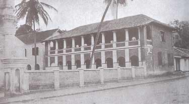
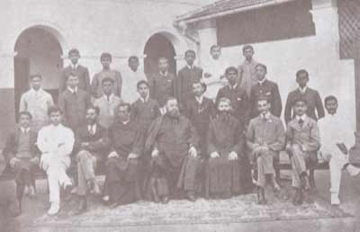

Our History
In 1820, the superior of all the Oratorians in Ceylon, Vincent de Rozairo, was the first missionary to Kandy. He erected a church on the same grounds where the present Scots Kirk stands. By 1828, the Scots Kirk site was found to be too small and hilly. A petition was submitted to Governor Sir Edward Barnes, who presented the petitioners with a new site. This site, roughly a square 152 by 150 feet (46 m × 46 m), became the location for the second Roman Catholic Church, now the site of St. Anthony's Cathedral.
|

|
Realizing that churches alone would not ensure the success of their missionary efforts, the Oratorians decided to open schools. In September 1843, Italian Oratorian Orazio Bettacchini was sent to the Kandyan mission. During his missionary year, 1843/44, he opened a school on the same premises. In August 1844, his successor Andrew J. Reinaud, who continued as a missionary until 1848, began by dismantling the school Bettacchini had erected. |
In November 1853, Felice Zoppi, a Franciscan from the Chinese Missionary, was sent to Kandy by Joseph Maria Bravi to address an issue with a school erected before 1853. As a result, Zoppi established two schools in January 1854: one for boys and another for girls, on the present premises of St. Anthony's Cathedral. Initially, 62 students were enrolled in the boys' school and 28 in the girls' school. The boys' school was named after Saint Anthony of Padua.
|
Paul Poorey took over the administration of the boys' school from Van Twest in 1855, contributing significantly to the school's growth. Due to the absence of efficient missionaries, the school's administration was handled by a succession of laymen until 1870. During this time, the school achieved significant success, being identified in 1867 as the second-best school in English among all missionary schools. |

|
In 1870, the Irish Christian Brothers briefly took over the administration of the school, and in 1871, laymen resumed control until 1875. Hilderbrand Vanderstraaten became principal in 1857, marking the beginning of the Sylvestro Benedictine legacy at the school. Paul Perera succeeded Vanderstraaten in 1876, introducing boarding life. In 1887, the Girls' School was moved to Katukelle, where a convent was established for the Good Shepherd Nuns.